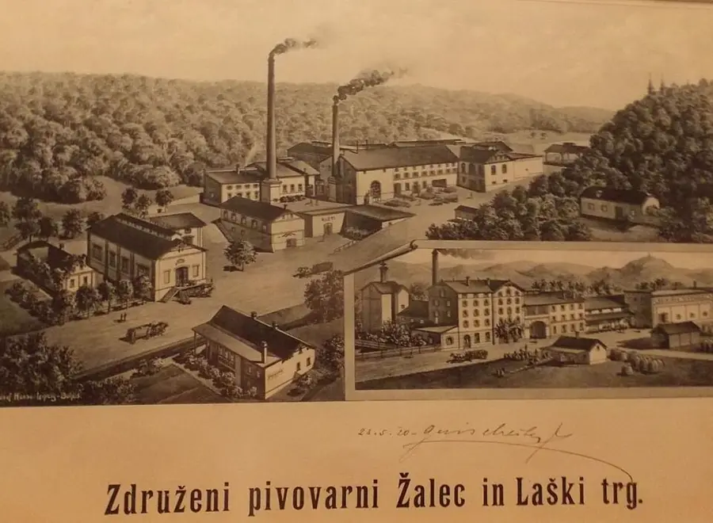

대표 로고대표 브랜드 마크
대표 로고대표 브랜드 마크라슈코 양조장 Laško Brewery
라슈코 양조장(Laško Brewery)은 슬로베니아 Laško에 있는 맥주 양조장이다. 슬로베니아에서 가장 큰 양조장이며 도시 이름을 따서 이름을 지었고, 현재 Heineken이 소유하고 있다.
최종 업데이트
라슈코 양조장은 어떤 브랜드인가
라슈코 양조장은 슬로베니아에서 가장 큰 양조장이다. 슬로베니아어 이름은 Pivovarna Laško이며, 본사는 Laško에 있고 양조장 이름도 이 도시의 이름에서 따왔다.
1945년 제2차 세계대전이 끝난 뒤에는 유고슬라비아에서 다섯 번째로 큰 양조장이었고, 1991년에는 유고슬라비아의 양조장 28곳 가운데 가장 큰 곳이 되었다. 같은 해 슬로베니아가 독립을 선언하고 십일 전쟁이 일어나면서 유고슬라비아 시장의 상당 부분을 잃었으나, 1990년대 동안 판매량은 회복되었다.
2016년 Laško와 Union이 Pivovarna Laško Union d.d.로 공식 합병되었으며, 소유주는 Heineken이다. 매년 여름 Laško에서 열려 관광객에게 가장 인기 있는 행사 가운데 하나로 꼽히는 Pivo-Cvetje 맥주와 꽃 축제에도 참가한다.
라슈코 양조장은 어떻게 시작되고 성장했나
양조장은 1825년 Franz Geyer가 이전 Valvasor Hospital 건물에 소규모 수제 양조장으로 세웠다. 1838년 양조장을 인수한 Heinrich 8월 Uhlich는 Rimske Toplice 목욕탕의 소유주로서 외국인 손님에게 맥주를 냈고 상업 중심지 Trieste로도 실어 날라 Laško 맥주의 명성을 높였다.
1867년 Anton Larisch는 새 양조장을 지었는데, 당시 Lower Styria에서 가장 큰 규모였다. 1889년에는 Simon Kukec이 양조장을 사들였다.
그는 Laško 양조장 역사에서 가장 중요한 인물로 평가되며, 여러 실험 끝에 온천수가 맥주 맛을 좋게 한다는 사실을 알아내 온천 맥주(thermal beer)라는 새 종류이자 첫 맥주 브랜드를 만들었다.
라슈코 양조장의 브랜드 아이덴티티는 무엇인가
슬로베니아 최대 양조장으로, 1889년 Simon Kukec이 온천수로 만든 온천 맥주의 전통을 이어 가며 현재는 Heineken 산하에 있는 브랜드이다.
라슈코 양조장의 대표 제품과 서비스는 무엇인가
양조장의 브랜드 목록에는 Laško, Zlatorog, Eliksir, Jubilejnik, Club, Trim이 올라 있다. 여기에 Dark, Light, Malt, Radler, Ice와 Bandidos, Cuba Libre, Tequila, Sun이 더해진다.
음료 브랜드로 iC Cider와 Oda water도 포함되어 있다. 1889년 Simon Kukec이 온천수를 사용해 만든 온천 맥주는 라이트와 다크로 양조되었으며 둘 다 일반 맥주보다 더 강했다.
이 맥주는 지금도 파생된 형태로 이어지고 있다.
라슈코 양조장은 지금 어떤 상태인가
2016년 Laško와 Union이 Pivovarna Laško Union d.d.로 공식 합병되었고, 모기업은 Heineken이다. 본사는 Laško에 있으며 슬로베니아에서 가장 큰 양조장으로 소개된다.
매년 여름 Laško에서 열리는 Pivo-Cvetje 맥주와 꽃 축제에도 참가한다.
라슈코 양조장 로고는 어떻게 변해왔나
대표 로고대표 브랜드 마크사진으로 보는 라슈코 양조장의 역사

자주 묻는 질문
라슈코 양조장는 어떤 산업의 브랜드인가요?
라슈코 양조장는 식음료 분야의 브랜드입니다.
라슈코 양조장의 브랜드 아이덴티티는 무엇인가요?
슬로베니아 최대 양조장으로, 1889년 Simon Kukec이 온천수로 만든 온천 맥주의 전통을 이어 가며 현재는 Heineken 산하에 있는 브랜드이다.
라슈코 양조장의 대표 제품은 무엇인가요?
양조장의 브랜드 목록에는 Laško, Zlatorog, Eliksir, Jubilejnik, Club, Trim이 올라 있다.
라슈코 양조장는 어느 기업이 소유하고 있나요?
2016년 Laško와 Union이 Pivovarna Laško Union d.d.로 공식 합병되었고, 모기업은 Heineken이다.
라슈코 양조장의 본사는 어디에 있나요?
라슈코 양조장의 본사는 Laško에 있습니다(위키데이터 기준).
라슈코 양조장의 공식 웹사이트는 어디인가요?
라슈코 양조장의 공식 웹사이트는 https://lasko.eu// 입니다.
출처와 검증
라슈코 양조장 관련 참고: 공식 웹사이트 · 위키데이터 Q2448461 · 한국어 위키백과 · 영어 위키백과. 브랜드명은 한글과 원어를 함께 표기하되 데이터에 없는 표기는 만들지 않습니다. 기원 국가·설립연도는 검수된 정의문에서 확인된 값을 우선하고, 없을 때만 공식 웹사이트 URL이 일치하는 위키데이터 개체의 값을 씁니다. 위키데이터 값은 2026-11-08 기준입니다.